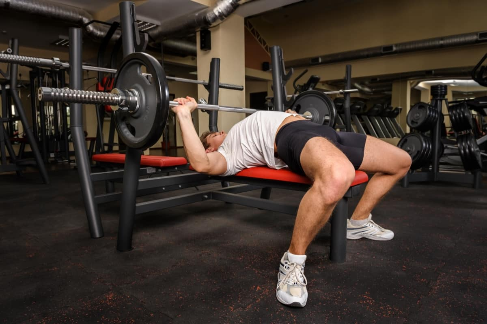

Hipertrofia y fuerza
Te explico brevemente que es el fallo muscular
Básicamente es el punto en el que el músculo que estamos entrenando no puede realizar una repetición más en su fase positiva o concéntrica.
Es decir y por poner un ejemplo: si estamos haciendo press de pecho no podríamos levantar la barra ya que nuestro pectoral está agotado.

¿Que es la hipertrofia?
La hipertrofia es un término utilizado para definir a aquellos músculos o grupos musculares que presentan un aumento considerado de la masa muscular y así mismo de la fuerza, pero se sentra mas en aumentar la masa muscular, no es necesario utilizar pesos pesados para está. Además es una condición que se produce por un entrenamiento constante y por la realización de ejercicios específicos.
Para realizar un buen proceso de hipetrofia se trabaja de la siguiente manera, se realizan 3 o 4 series de 6 a 12 repeticiones, con un peso que te haga casi llegar al fallo, a 2 o 3 series del fallo. Tambien es importante aclarar que entre series se necesita un tiempo de descanso para que en la siguiente serie tenga un buen rendimiento y tecnica, tambien afecta al progreso, este descanso entre series debe ser de 2 a 5 minutos.
¿Que es el entrenamiento de fuerza?
El entrenamiento de fuerza como su nombre indica tiene como objetivo aumentar la fuerza del deportista y para ello se centra en trabajar la potencia del músculo, es decir la capacidad más explosiva de las fibras musculares. Los ejercicios focalizados específicamente en el trabajo fuerza se realizan al levantar cargas próximas al 100% de la repetición máxima y no pretenden en ningún caso, al menos como objetivo directo, aumentar la cantidad de masa muscular.
Por otro lado, comentar que las rutinas de fuerza se centran, a diferencia de las de hipertrofia, en ejercicios básicos y compuestos. Peso muerto, press militar, press banca o las temidas sentadillas son un buen ejemplo de ejercicios perfectos para trabajar la fuerza en el gimnasio. Cabe destacar que en los entrenamientos de fuerza se trabaja con menos repeticiones y mas tiempo de descanso, para asi recuperar bien el musculo utilizado, este descanso puede ser de 3 a 5 minutos o mas.
Rutinas mas utilizadas para la hipertrofia y fuerza
Rutina Weider
La rutina Wieder se trata básicamente en enfocar el entrenamiento en uno o dos grupos musculares por sesión, utilizando varios ejercicios por músculo y varias series por cada ejercicio. Se suele usar para entrenar cada grupo muscular una vez semanalmente, y para realizarla de forma correcta se deberá realizar entre 3 y 6 sesiones por semana, y así trabajar todos los grupos musculares. En muchos de esos ejercicios es imprescindible utilizar máquinas, porque hay que aislar los músculos que se quieren trabajar. Lo más usual cuando se usa la rutina Weider es realizar 3 o 4 ejercicios para ejercitar músculos grandes, y 2 o 3 ejercicios para los músculos pequeños, con 3 o 4 series de repeticiones por cada ejercicio. Por supuesto, la forma de combinar esos grupos de músculos dependerá de cada persona, es decir, que se puede entrenar músculos grandes con pequeños, grandes entre sí, pequeños entre sí, y músculos afines o antagonistas. Por ejemplo, puedes entrenar dorsales con bíceps, pectorales con bíceps, o mezclar espalda y pectorales en una sesión de entrenamiento, y al día siguiente tríceps y bíceps. Es una rutina que permite muchas combinaciones, pero siempre manteniendo las características básicas de este tipo de entrenamiento. La cuestión es mantener casi siempre ejercicios de aislamiento para trabajar solamente un grupo muscular. Por tanto, se usan mucho las máquinas y elementos como las mancuernas, aunque para que todo sea más completo, los expertos recomiendan usar también algún ejercicio compuesto, como puede ser el press de banca o las sentadillas.
Rutina Fullbody
Es una práctica ideal para ganar fuerza y ejercitar el sistema cardiorrespiratorio. El Full Body es una técnica de entrenamiento que combina el movimiento, la coordinación, la fuerza y la flexibilidad. El Full Body propone un tipo de entrenamiento dinámico, completo, eficaz tanto para principiantes como para avanzados. El objetivo es trabajar la mayor cantidad de grupos musculares dentro del lapso de una sesión que suele durar entre 45 minutos y una hora, ni más ni menos. Expeditivo y eficiente, el tiempo justo para rendir de manera óptima y evitar posibles fatigas. Es ideal para todos los que practican algún deporte puntual ya que, potencia su rendimiento frente a las distintas situaciones de juego a las que se exponen. Entre los adherentes también están los que recién se inician en la actividad física dado que los ejercicios no requieren complejidad, son sencillos de ejecutar y de aprender. Tampoco hay que olvidarse de los que cuentan con poco tiempo para entrenar y que en este método encontraron la solución para mantenerse activos entre dos y tres veces por semana.
Rutina Push Pull Legs
El entrenamiento de Push/Pull/Legs se traduce a Empuje Jalón Pierna, y se caracteriza por ser un modelo de entrenamiento en el cual se utilizan músculos que realizan acciones similares y se trabajan en el mismo día. Entonces, el día de empuje se trabajan pectoral, hombro y tríceps; el día de jalón se trabaja espalda y bíceps; y el día de pierna se trabajan todos los músculos de la pierna. Este tipo de entrenamiento ofrece una gran ventaja y es que puede ser utilizado por cualquier tipo de persona, sea cual sea su nivel de entrenamiento. Es muy dinámico y posee ventajas como la utilización de ejercicios compuestos, el trabajo de músculos agonistas, buen periodo de recuperación y la especificidad en los músculos con menos desarrollo muscular.
Rutina torso/pierna
Esta rutina es recomendada para personas que llevan 1 año o mas entrenando de manera correcta y con una buena base. Se trata de una rutina muy sencilla, sin porcentajes ni cálculos complicados. A pesar de su simpleza es la rutina que mejores ganancias ha dado. La rutina está estructurada en 2 entrenamientos de torso y 2 entrenamientos de pierna. Un día nos centraremos en fuerza y el siguiente en hipertrofia. La rutina tiene un 5º día OPCIONAL, y que recomiendo no introducir hasta ver la tolerancia a la rutina de 4 días. Esto es muy importante. La progresión de cargas no se basa en %, por lo que en el fondo es bastante sencilla. Las descargas estarán planificadas inicialmente, aunque se podrán incluir pequeños «resets» dentro de la rutina cuando convengan.
Perdida de grasa
Hablemos un poco de la perdida de grasa, esto viendolo desde el lado de vista de una persona y no tanto de un profesional. Lo primero que necesitas saber es que la grasa no se transpira, se quema, esta se expulsa cuando respiramos. Tambien cabe aclarar que para bajar de peso no es necesaria una dieta estricta sacando todo lo que nos gusta, por cosas "sanas", para una constante perdida de grasa de manera no extrema necesitamos realizar un deficit calorico, este consta de disminuir nuetros carbohidratos diarios y hacer actividad cardiobascular, salir a caminar, correr o hacer bici es suficiente, cada dia usar un tiempo libre. Hay que saber que tenemos que disminuir los carbohidratos por 400g o 500g para hacerlo de manera correcta, no hay necesidad de mas, no hay que esforzarse y sufrir golpes laterales en el camino.
Tambien es importante mantener nuestra cantidad de proteinas en forma optima, ya que esta es muy importante para el crecimiento y rendimiento del musculo. El porcentaje minimo que se hace es de 0,8 gramos por kilogramo de peso corporal, pero puede variar dependiendo de la actividad fisica y necesidad de la persona
Como realizar algunos ejercicios

Aqui te nombro los pasos para realizar peso muerto.
1.Colócate de pie y abre las piernas en línea con la cadera y los hombros, colocando los pies ligeramente hacia afuera para ayudar al equilibrio.
2.Con la espalda completamente recta, flexiona ligeramente las rodillas.
3.Comienza a descender el cuerpo con la espalda recta e intentando que los muslos queden paralelos al cuerpo y los pies y la parte inferior de las piernas en ángulo recto.
4.Mirando hacia el frente, mueve a la vez los hombros y la cadera al mismo tiempo que asciendes.

Te voy a nombrar el paso a paso de como realizar un press de banca.
1.Coloca las manos a la altura de los hombros y, con las muñecas firmes y rectas, sujeta la barra con el peso que te corresponda.
2.Toma una respiración profunda y, activando los hombros, la espalda y los glúteos, levanta la barra de la pesa para sacarla del enganche y, espirando profundamente, coloca con cuidado el peso
sobre los pectorales, debajo junto de los pezones y controlando el peso.
3.Realiza el ejercicio de press, haz movimientos ascendentes y descendentes.
4.Sube el peso con una fuerza explosiva, debemos fijar los omoplatos y conservar el cuerpo estable y firme.
5.Baja el peso de forma controlada y marca la posición sin dejar que venza el peso sobre el pecho.
6.Mantén una respiración consciente durante las inspiraciones ejerciendo fuerza explosiva y en las espiraciones activando el abdomen y distribuyendo la tensión hasta los pies.